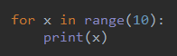
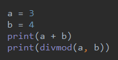
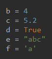

python笔记
python代码编写
python的注释
1.单行注释单行注释:
2.多行注释多行注释1:多行注释2:
3.空格缩进
python中空格表示缩进
例如:

如果上面的for循环中，没有缩进print()将不是for循环的语句
在python的代码的编写中，保持良好的代码缩进风格，也要使用好空格
例如:

在使用操作符的时候最好在操作符两端加上一个空格，在使用,号时最好在,号后加一个空格
python变量和数据类型
变量
- python中的变量必须先声明后使用，不然会报未定义错误
- python中没有常量，python中的常量知识逻辑上的常量
- 变量可以用
del删除，删除后再使用会报未定义错误，对象没有引用会被垃圾回收器回收。 - python中定义变量不用声明数据类型，变量的数据类型由变量值决定。
例如:

b是int类型,c是float类型,d是bool类型,e是str类型,f也是str类型
数据类型
python是动态类型语言(变量类型由变量值确定)，也是强类型语言(每个对象都有数据类型，只支持该数据类型的操作)
类型转换:
小数转整数:截掉小数保留整数int(3.23)=>3
字符串数字:转成对应的整数int("1234")=>1234
布尔值转整数:True转换1，false转成0int(True)=>1,int(False)=>0
整数和小数相加自动转换成小数float(x)将x转换成float类型，x不变，产生新的对象。
运算符
+:加号运算符-:减号运算符*:乘号运算符/:除号运算符(有小数)//:加号运算符(小数截掉)%:取余运算符**:乘方运算符==:恒等运算符，判断对象内容是否相同is:判断两个对象是否相同(比较地址)，在python中解释器会缓存(-5-255)的整数数，这之间的数都是同一对象(两个对象值相等就相等)。在pycharm中所有整数和小数都是同一对象。is not:判断两个对象是否是不同对象。is主要用于判断变量和None
字符串
字符串的本质是字符序列，python中的字符串是不可变的。
python不支持字符，单个字符也是字符串。
python3支持unicode编码,默认就是16位的unicode编码
字符串的创建
a='abc'或a="abc",如果字符串中存在单引号可以用双引号包裹字符串，反之字符串中有双引号则用单引号包裹字符串。也可以在字符串中用\'转义单引号，同样双引号也可以儿这样转义。
字符串处理常用方法
ord():将字符转成Unicode码的十进制表示。chr():将十进制数字转换成Unicode码的对应字符。